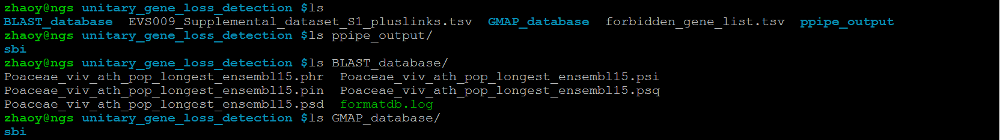

Yi Zhao, Center for Bioinformatics, Peking University; zhaoy@mail.cbi.pku.edu.cn
Ge Gao, Center for Bioinformatics, Peking University; gaog@mail.cbi.pku.edu.cn
Most of current study to identify gene loss events are based on mutated genomic region of lost gene, also called relic or pseudogene, which can only find gene loss event leaving degraded segments of lost gene. To make a comprehensive profiling of unitary gene loss events in different species or node of Poaceae clade, we developed a new pipeline which can identify unitary gene loss event with or without existing relic after gene loss. This pipeline is written in Perl and wrapped in Bash. To run this pipeline, you need Bash shell, Perl language, and some other software packages, i.e. PseudoPipe, GeneWise, GMAP and BLAST. The whole pipeline is shown below, and it is labeled with amount of filtered gene loss events at each step of unitary gene loss detection in Poaceae clade.
Example for the file named orthologous_groups.tsv, which contains constructed orthologous groups. The first column is the name of each constructed orthologous group, showing the group number, amount of members in each species and amount of total members in the group. All of the member names are shown in the following columns. Part of this file is shown below.
orthologous_group_name orthologous_group_member orthologous_group_1_containing_osm_0_bdi_0_sbi_0_zm_0_viv_1_ath_1_pop_0_total_2 ATMG00030 Vv13s0073g00590 orthologous_group_2_containing_osm_2_bdi_0_sbi_0_zm_8_viv_2_ath_2_pop_1_total_15 ATMG00060 POPTR_0011s02220 GRMZM5G894515 GRMZM2G405584 GRMZM2G137648 GRMZM2G176216 GRMZM2G358205 GRMZM2G309173 LOC_Os10g21418 LOC_Osp1g00880 GRMZM2G364278 GRMZM2G455403 Vv00s0246g00140 Vv00s0246g00150 ATCG01010 orthologous_group_3_containing_osm_1_bdi_0_sbi_0_zm_2_viv_0_ath_1_pop_0_total_4 ATMG00070 LOC_Osm1g00590 GRMZM5G839924 GRMZM2G442129 orthologous_group_4_containing_osm_0_bdi_0_sbi_0_zm_0_viv_0_ath_1_pop_1_total_2 ATMG00080 POPTR_0043s00280 orthologous_group_5_containing_osm_3_bdi_0_sbi_0_zm_1_viv_0_ath_1_pop_1_total_6 ATMG00090 GRMZM5G861791 LOC_Osm1g00260 LOC_Os12g34054 LOC_Os12g34124 POPTR_0161s00210 orthologous_group_6_containing_osm_1_bdi_0_sbi_1_zm_3_viv_0_ath_1_pop_0_total_6 ATMG00110 GRMZM5G889905 GRMZM5G860481 LOC_Osm1g00620 GRMZM2G350284 Sb01g047260 orthologous_group_7_containing_osm_0_bdi_0_sbi_0_zm_0_viv_0_ath_1_pop_0_total_1 ATMG00120 orthologous_group_8_containing_osm_0_bdi_0_sbi_0_zm_0_viv_0_ath_1_pop_0_total_1 ATMG00150 orthologous_group_9_containing_osm_1_bdi_0_sbi_0_zm_3_viv_1_ath_1_pop_0_total_6 ATMG00160 Vv00s0438g00010 LOC_Osm1g00330 GRMZM2G109332 GRMZM5G862955 GRMZM2G142109
Example for the file named forbidden_gene_list.tsv. Each gene name each line and the format of listed gene names should be consistent with that in the constructed orthologous groups. Part of this file is shown below.
LOC_Os03g61120 LOC_Os03g61890 LOC_Os03g61940 LOC_Os03g62650 LOC_Os03g63330 LOC_Os03g63950 LOC_Os04g04230 LOC_Os04g08350 LOC_Os04g09900 LOC_Os04g10060
Example for the file named EVS009_Supplemental_dataset_S1_pluslinks.tsv. The first five columns are genes located in the same synteny region among genomes of brachypodium, rice, sorghum and maize, and the second five ones are genes located in the duplicated synteny region generated in pre-grass whole genome duplication event. Part of this file is shown below.
Maize1 Maize2 Sorghum Rice Brachypodium Maize1 (pre-grass duplicate) Maize2 (pre-grass duplicate) Sorghum (pre-grass duplicate) Rice (pre-grass duplicate) Brachypodium (pre-grass duplicate) GEvo Link GRMZM2G030116||GRMZM2G359892 GRMZM2G162109 Sb09g023120||Sb09g016440 LOC_Os05g39500||LOC_Os05g28040 BRADI2G29110||BRADI2G22560 GRMZM2G034810 GRMZM2G135332 Sb03g038670 LOC_Os01g61310 BRADI2G53880 http://genomevolution.org/r/33qk GRMZM2G034810 GRMZM2G135332 Sb03g038670 LOC_Os01g61310 BRADI2G53880 GRMZM2G030116||GRMZM2G359892 GRMZM2G162109 Sb09g023120||Sb09g016440 LOC_Os05g39500||LOC_Os05g28040 BRADI2G29110||BRADI2G22560 http://genomevolution.org/r/33ql GRMZM2G316635 chr8:144728966-144766755:0:hit Sb03g028900 LOC_Os01g44310 BRADI2G44490 GRMZM2G438895 chr8:72402481-72501008:1:gap Sb09g029580 LOC_Os05g50370 BRADI2G14960 http://genomevolution.org/r/33qm GRMZM2G438895 chr8:72402481-72501008:1:gap Sb09g029580 LOC_Os05g50370 BRADI2G14960 GRMZM2G316635 chr8:144728966-144766755:0:hit Sb03g028900 LOC_Os01g44310 BRADI2G44490 http://genomevolution.org/r/33qn chr3:186211860-186243301:0:gap chr8:170179600-170260580:0:gap Sb03g037300 LOC_Os01g58760 BRADI2G52590 GRMZM2G175870 GRMZM2G033230 Sb09g024290 LOC_Os05g41540 BRADI2G21200 http://genomevolution.org/r/33qo GRMZM2G175870 GRMZM2G033230 Sb09g024290 LOC_Os05g41540 BRADI2G21200 chr3:186211860-186243301:0:gap chr8:170179600-170260580:0:gap Sb03g037300 LOC_Os01g58760 BRADI2G52590 http://genomevolution.org/r/33qp GRMZM2G175280||GRMZM2G332294 GRMZM2G149150 Sb07g025490||Sb07g025270 LOC_Os08g43090 BRADI3G41980||BRADI3G41820 GRMZM2G037910||GRMZM2G180847 Sb02g030170||Sb02g029870 LOC_Os09g34060||LOC_Os09g34880 BRADI4G35370||BRADI4G35240 http://genomevolution.org/r/33qq GRMZM2G037910||GRMZM2G180847 Sb02g030170||Sb02g029870 LOC_Os09g34060||LOC_Os09g34880 BRADI4G35370||BRADI4G35240 GRMZM2G175280||GRMZM2G332294 GRMZM2G149150 Sb07g025490||Sb07g025270 LOC_Os08g43090 BRADI3G41980||BRADI3G41820 http://genomevolution.org/r/33qr chr1:214331670-214398517:0:gap chr4:88916810-89321558:1:gap Sb07g020960 LOC_Os08g33340 BRADI3G36460 chr7:104100162-104296780:1:gap GRMZM2G105772 Sb02g024340 LOC_Os09g24200 BRADI4G29870 http://genomevolution.org/r/33qs
The data necessary for unitary gene loss detection is shown below. In this manual, we take unitary gene loss detection in sorghum as the example.
You need download this contracted archive Unitary_Gene_Loss_Detection_Pipeline.tar.gz, uncompress it and add the directory containing all scripts to Linux PATH. Then you make a directory named unitary_gene_loss_detection, put necessary data files in it as mentioned in the prerequisite, and run this pipeline in it.
Example for file named orthologous_groups_with_candidate_unitary_gene_loss_in_sbi.tsv, which contains candidate unitary gene loss event detected in sbi represented by orthologous group happened in it.
orthologous_group_193_containing_osm_1_bdi_1_sbi_0_zm_2_viv_1_ath_2_pop_2_total_9 AT5G01460 Vv08s0007g02270 POPTR_0016s12350 POPTR_0006s10100 GRMZM5G871262 BRADI1G49650 GRMZM2G012284 LOC_Os06g03760 AT3G08930 orthologous_group_290_containing_osm_2_bdi_1_sbi_0_zm_1_viv_2_ath_2_pop_3_total_11 AT5G02502 BRADI1G21220 GRMZM2G079397 LOC_Os03g27424 LOC_Os07g42826 POPTR_0010s21410 Vv13s0019g00870 POPTR_0008s05330 POPTR_0008s05340 Vv08s0007g00090 AT3G12587 orthologous_group_797_containing_osm_2_bdi_1_sbi_0_zm_1_viv_1_ath_1_pop_1_total_7 AT5G08050 Vv17s0000g05250 POPTR_0015s06950 BRADI4G03820 LOC_Os12g38640 GRMZM2G074393 LOC_Os11g27300 orthologous_group_828_containing_osm_1_bdi_1_sbi_0_zm_1_viv_1_ath_2_pop_2_total_8 AT5G08340 Vv10s0071g00290 POPTR_0007s07260 POPTR_0005s09120 LOC_Os03g58710 GRMZM2G166931 BRADI1G05116 AT5G23330 orthologous_group_834_containing_osm_1_bdi_1_sbi_0_zm_2_viv_1_ath_2_pop_2_total_9 AT5G08390 POPTR_0008s00290 POPTR_0010s26190 Vv10s0071g01150 GRMZM2G406553 GRMZM2G160702 LOC_Os04g58130 BRADI5G26190 AT5G23430 orthologous_group_955_containing_osm_1_bdi_2_sbi_0_zm_2_viv_1_ath_1_pop_3_total_10 AT5G10020 POPTR_0007s06420 POPTR_0005s08470 Vv07s0031g01440 POPTR_0007s06430 BRADI1G20750 LOC_Os07g43350 GRMZM2G081857 GRMZM2G162781 BRADI1G21337 orthologous_group_1244_containing_osm_1_bdi_1_sbi_0_zm_2_viv_1_ath_1_pop_2_total_8 AT5G13470 Vv13s0158g00350 POPTR_0003s20270 POPTR_0001s05810 GRMZM2G172710 LOC_Os01g71262 BRADI2G60370 GRMZM2G024858 orthologous_group_1299_containing_osm_1_bdi_1_sbi_0_zm_1_viv_1_ath_1_pop_1_total_6 AT5G14080 Vv14s0068g01660 POPTR_0001s33450 LOC_Os03g56960 BRADI1G06650 GRMZM2G131820 orthologous_group_1318_containing_osm_1_bdi_1_sbi_0_zm_2_viv_2_ath_4_pop_5_total_15 AT5G14270 POPTR_0001s36360 Vv14s0171g00380 LOC_Os08g03360 GRMZM2G127299 GRMZM2G351382 BRADI3G14160 AT3G27260 AT3G01770 POPTR_0015s10380 POPTR_0015s10370 POPTR_0012s09600 POPTR_0012s09590 Vv17s0000g01830 AT5G63320 orthologous_group_2096_containing_osm_1_bdi_1_sbi_0_zm_1_viv_1_ath_2_pop_2_total_8 AT5G23730 POPTR_0012s13290 POPTR_0015s13210 Vv16s0050g00020 GRMZM2G389155 LOC_Os02g02380 BRADI3G01440 AT5G52250 orthologous_group_2794_containing_osm_1_bdi_1_sbi_0_zm_1_viv_1_ath_5_pop_2_total_11 AT5G39450 Vv07s0031g02420 POPTR_0005s06830 POPTR_0007s04530 GRMZM2G360352 LOC_Os08g01430 BRADI3G13220 AT5G39480 AT5G39460 AT5G39490 AT5G39470 orthologous_group_2873_containing_osm_1_bdi_1_sbi_0_zm_2_viv_1_ath_1_pop_2_total_8 AT5G40490 Vv14s0066g00480 POPTR_0001s35360 POPTR_0017s10590 GRMZM2G050218 AC233867.1_FG004 BRADI3G39090 LOC_Os08g38410 orthologous_group_2995_containing_osm_1_bdi_2_sbi_0_zm_1_viv_1_ath_1_pop_1_total_7 AT5G41880 Vv02s0025g01350 POPTR_0003s10380 LOC_Os05g29010 GRMZM2G439297 BRADI3G42937 BRADI3G03817 orthologous_group_3179_containing_osm_1_bdi_1_sbi_0_zm_7_viv_1_ath_1_pop_1_total_12 AT5G43850 POPTR_0008s15720 Vv05s0020g04070 GRMZM5G827939 GRMZM2G433446 BRADI3G26930 LOC_Os10g28360 GRMZM2G342829 GRMZM2G419070 GRMZM2G373040 GRMZM2G434572 AC233900.1_FG002 orthologous_group_3359_containing_osm_2_bdi_1_sbi_0_zm_2_viv_1_ath_1_pop_1_total_8 AT5G45790 POPTR_0016s03010 Vv08s0040g00250 BRADI1G57030 LOC_Os02g26550 LOC_Os12g03630 GRMZM2G180166 GRMZM2G089565 orthologous_group_3523_containing_osm_1_bdi_1_sbi_0_zm_1_viv_1_ath_1_pop_2_total_7 AT5G47710 Vv00s0531g00030 POPTR_0006s00650 POPTR_0016s00700 BRADI4G08660 LOC_Os09g07800 GRMZM2G312838 orthologous_group_3603_containing_osm_1_bdi_1_sbi_0_zm_1_viv_2_ath_2_pop_1_total_8 AT5G48590 POPTR_0002s24910 Vv00s0360g00020 Vv00s2037g00010 LOC_Os11g26890 BRADI4G19497 GRMZM2G171420 AT3G07310 orthologous_group_3965_containing_osm_1_bdi_1_sbi_0_zm_1_viv_1_ath_1_pop_1_total_6 AT5G52780 Vv16s0050g01260 POPTR_0004s07130 GRMZM5G889520 LOC_Os10g38910 BRADI3G31960 orthologous_group_3967_containing_osm_1_bdi_1_sbi_0_zm_1_viv_1_ath_1_pop_1_total_6 AT5G52800 POPTR_0017s01050 Vv16s0050g01420 LOC_Os07g28470 BRADI1G28353 GRMZM5G809078 orthologous_group_4233_containing_osm_1_bdi_1_sbi_0_zm_1_viv_1_ath_1_pop_1_total_6 AT5G55710 Vv19s0015g00520 POPTR_0004s20320 GRMZM2G317451 LOC_Os02g49470 BRADI3G56350 orthologous_group_4348_containing_osm_2_bdi_2_sbi_0_zm_3_viv_2_ath_3_pop_4_total_16 AT5G57060 Vv11s0016g01750 POPTR_0006s14830 POPTR_0018s05410 BRADI2G05310 LOC_Os01g08814 GRMZM2G174570 GRMZM2G099466 LOC_Os05g08854 BRADI2G33657 GRMZM5G856067 AT4G26060 Vv09s0002g01880 POPTR_0001s20590 AT1G54217 POPTR_0003s04100 orthologous_group_5995_containing_osm_1_bdi_1_sbi_0_zm_2_viv_1_ath_1_pop_1_total_7 AT4G13650 Vv08s0007g07510 POPTR_0013s05550 BRADI2G22840 GRMZM2G153275 GRMZM2G056996 LOC_Os12g36620 orthologous_group_6026_containing_osm_1_bdi_1_sbi_0_zm_1_viv_1_ath_2_pop_3_total_9 AT4G14070 Vv08s0032g00050 POPTR_0017s08700 POPTR_0017s08690 POPTR_0001s32900 BRADI1G01847 GRMZM2G016774 LOC_Os03g62850 AT3G23790 orthologous_group_6308_containing_osm_1_bdi_1_sbi_0_zm_1_viv_1_ath_1_pop_2_total_7 AT4G17550 POPTR_0001s15240 POPTR_0003s08040 Vv00s0616g00010 LOC_Os02g43620 BRADI3G50397 GRMZM2G124136 orthologous_group_6704_containing_osm_1_bdi_1_sbi_0_zm_2_viv_1_ath_1_pop_1_total_7 AT4G24400 Vv18s0001g07980 POPTR_0002s10970 GRMZM2G383240 GRMZM2G021517 BRADI2G40500 LOC_Os01g35184 orthologous_group_6806_containing_osm_1_bdi_1_sbi_0_zm_1_viv_1_ath_1_pop_1_total_6 AT4G26330 POPTR_0001s03950 Vv06s0004g00210 LOC_Os03g06290 GRMZM2G377780 BRADI1G74547 orthologous_group_6818_containing_osm_1_bdi_1_sbi_0_zm_1_viv_1_ath_1_pop_1_total_6 AT4G26680 POPTR_0014s16390 Vv12s0057g00740 LOC_Os10g21920 BRADI3G03280 GRMZM2G029514 orthologous_group_6845_containing_osm_1_bdi_1_sbi_0_zm_1_viv_1_ath_1_pop_1_total_6 AT4G27340 Vv19s0014g03930 POPTR_0011s12780 BRADI2G13350 LOC_Os01g29409 GRMZM2G168959 orthologous_group_7093_containing_osm_1_bdi_1_sbi_0_zm_1_viv_1_ath_1_pop_1_total_6 AT4G30845 Vv11s0037g00830 POPTR_0006s19390 GRMZM2G113287 LOC_Os03g11250 BRADI1G70380 orthologous_group_7244_containing_osm_1_bdi_1_sbi_0_zm_2_viv_1_ath_1_pop_2_total_8 AT4G32820 Vv04s0008g00560 POPTR_0018s04800 POPTR_0006s25130 GRMZM2G412150 GRMZM2G420121 BRADI1G12217 LOC_Os03g48100 orthologous_group_7353_containing_osm_2_bdi_1_sbi_0_zm_2_viv_2_ath_3_pop_5_total_15 AT4G34180 Vv03s0180g00080 POPTR_0001s30890 POPTR_0001s30900 Vv03s0180g00070 POPTR_0001s30910 POPTR_0009s10010 LOC_Os08g23100 GRMZM2G061702 BRADI4G08340 LOC_Os09g02270 GRMZM2G138744 AT4G35220 AT1G44542 POPTR_0009s10020 orthologous_group_7576_containing_osm_2_bdi_1_sbi_0_zm_3_viv_1_ath_1_pop_2_total_10 AT4G37130 Vv07s0255g00010 POPTR_0007s11760 POPTR_0005s21290 LOC_Os09g28019 GRMZM2G024775 GRMZM2G134508 BRADI4G31937 LOC_Os03g55660 GRMZM2G345582 orthologous_group_7605_containing_osm_1_bdi_1_sbi_0_zm_1_viv_1_ath_1_pop_1_total_6 AT4G37660 Vv00s1232g00020 POPTR_0004s23300 BRADI1G20710 LOC_Os07g43310 GRMZM2G171501 orthologous_group_7646_containing_osm_1_bdi_1_sbi_0_zm_1_viv_1_ath_1_pop_1_total_6 AT4G38225 POPTR_0004s21720 Vv03s0038g03970 GRMZM2G321053 LOC_Os03g03670 BRADI1G76550 orthologous_group_8076_containing_osm_1_bdi_1_sbi_0_zm_3_viv_1_ath_1_pop_1_total_8 AT3G06290 Vv05s0020g02350 POPTR_0010s02900 BRADI1G19627 LOC_Os07g45160 GRMZM2G429213 GRMZM2G429231 GRMZM2G131389 orthologous_group_8510_containing_osm_1_bdi_1_sbi_0_zm_1_viv_2_ath_1_pop_7_total_13 AT3G13540 Vv08s0007g07230 POPTR_0019s05210 POPTR_0019s05200 POPTR_0019s05190 POPTR_0013s05300 POPTR_0013s05310 LOC_Os01g50110 BRADI2G47367 GRMZM2G395672 Vv06s0004g00570 POPTR_0001s04240 POPTR_0003s21120 orthologous_group_8527_containing_osm_1_bdi_1_sbi_0_zm_1_viv_1_ath_1_pop_1_total_6 AT3G13700 POPTR_0003s02970 Vv09s0002g02410 GRMZM2G063462 BRADI1G49340 LOC_Os06g05800 orthologous_group_8557_containing_osm_1_bdi_1_sbi_0_zm_1_viv_2_ath_1_pop_2_total_8 AT3G13990 Vv09s0002g01530 POPTR_0001s17070 POPTR_0003s06200 Vv04s0043g00960 LOC_Os03g29750 BRADI1G60080 GRMZM2G004736 orthologous_group_8698_containing_osm_1_bdi_1_sbi_0_zm_1_viv_1_ath_2_pop_1_total_7 AT3G15780 Vv09s0002g06800 POPTR_0001s19310 GRMZM2G428356 BRADI2G13422 LOC_Os01g29740 AT1G52550 orthologous_group_8773_containing_osm_1_bdi_1_sbi_0_zm_1_viv_1_ath_1_pop_2_total_7 AT3G16890 Vv05s0077g01320 LOC_Os12g37100 BRADI4G04840 GRMZM2G420723 POPTR_0010s15110 POPTR_0019s13320 orthologous_group_9201_containing_osm_1_bdi_1_sbi_0_zm_1_viv_2_ath_1_pop_3_total_9 AT3G22670 POPTR_0010s09410 Vv05s0020g03830 Vv05s0020g03800 POPTR_0010s09390 POPTR_0010s09400 LOC_Os03g53490 BRADI1G08840 GRMZM2G078416 orthologous_group_9445_containing_osm_1_bdi_2_sbi_0_zm_1_viv_1_ath_1_pop_3_total_9 AT3G26380 Vv01s0137g00630 POPTR_0010s05840 POPTR_0008s18920 POPTR_0010s05830 BRADI2G13530 LOC_Os01g33420 GRMZM2G028307 BRADI2G13520 orthologous_group_9841_containing_osm_1_bdi_1_sbi_0_zm_2_viv_1_ath_2_pop_4_total_11 AT3G46540 POPTR_0009s03580 POPTR_0001s24610 Vv06s0004g04590 BRADI2G54607 LOC_Os01g62370 GRMZM2G463415 GRMZM2G036120 POPTR_0008s05570 POPTR_0010s21160 AT1G08670 orthologous_group_9853_containing_osm_1_bdi_1_sbi_0_zm_1_viv_1_ath_1_pop_1_total_6 AT3G46790 Vv06s0004g05500 POPTR_0009s04240 GRMZM2G380195 BRADI2G54927 LOC_Os01g62910 orthologous_group_9960_containing_osm_1_bdi_1_sbi_0_zm_1_viv_1_ath_1_pop_1_total_6 AT3G49142 Vv16s0050g02250 POPTR_0005s00730 LOC_Os03g13830 AC155390.2_FG002 BRADI1G68480 orthologous_group_9963_containing_osm_1_bdi_1_sbi_0_zm_1_viv_4_ath_1_pop_1_total_9 AT3G49170 POPTR_0015s02060 Vv00s2397g00010 Vv00s1944g00010 Vv00s2304g00010 Vv16s0050g02690 GRMZM2G462625 LOC_Os05g12130 BRADI2G32290 orthologous_group_9973_containing_osm_1_bdi_1_sbi_0_zm_5_viv_1_ath_1_pop_2_total_11 AT3G49400 POPTR_0015s00760 Vv16s0098g01030 POPTR_0012s02880 GRMZM2G457467 GRMZM2G155565 BRADI1G55216 LOC_Os01g50690 GRMZM2G160046 GRMZM2G458266 GRMZM2G036726 orthologous_group_10063_containing_osm_1_bdi_1_sbi_0_zm_1_viv_1_ath_1_pop_1_total_6 AT3G51500 Vv04s0044g01980 POPTR_0011s14940 GRMZM2G326545 BRADI3G06830 LOC_Os02g10010 orthologous_group_10152_containing_osm_2_bdi_2_sbi_0_zm_2_viv_2_ath_1_pop_2_total_11 AT3G52770 Vv08s0007g03480 LOC_Os12g05560 LOC_Os11g05430 BRADI4G42250 BRADI4G42480 AC194104.3_FG010 AC198781.3_FG002 POPTR_0006s08320 POPTR_0010s24410 Vv13s0106g00690 orthologous_group_10489_containing_osm_1_bdi_1_sbi_0_zm_3_viv_1_ath_1_pop_2_total_9 AT3G57600 POPTR_0016s05360 POPTR_0006s05320 Vv08s0007g08150 GRMZM2G419901 LOC_Os03g07830 GRMZM2G399098 GRMZM2G376255 BRADI1G72990 orthologous_group_10901_containing_osm_1_bdi_1_sbi_0_zm_1_viv_1_ath_1_pop_1_total_6 AT3G63370 Vv00s0179g00220 POPTR_0005s23690 BRADI5G12970 AC203841.3_FG002 LOC_Os04g39410 orthologous_group_11049_containing_osm_1_bdi_1_sbi_0_zm_2_viv_2_ath_2_pop_1_total_9 AT2G03130 Vv01s0011g01450 Vv00s2478g00020 POPTR_0003s07240 BRADI2G17250 LOC_Os05g48050 GRMZM2G101042 GRMZM2G057388 AT1G70190 orthologous_group_11176_containing_osm_1_bdi_1_sbi_0_zm_1_viv_1_ath_1_pop_2_total_7 AT2G05810 POPTR_0014s15680 POPTR_0002s21720 Vv12s0059g01340 BRADI4G21740 LOC_Os09g05030 GRMZM2G411260 orthologous_group_11297_containing_osm_1_bdi_1_sbi_0_zm_3_viv_1_ath_1_pop_1_total_8 AT2G14260 Vv03s0088g01170 POPTR_0001s29460 LOC_Os05g43830 GRMZM2G176396 BRADI2G19980 GRMZM2G044663 AC199187.3_FG006 orthologous_group_11379_containing_osm_2_bdi_1_sbi_0_zm_1_viv_1_ath_1_pop_1_total_7 AT2G16630 Vv03s0038g01960 POPTR_0004s17640 GRMZM2G130813 BRADI3G00370 LOC_Os02g01190 LOC_Os05g27970 orthologous_group_11789_containing_osm_1_bdi_1_sbi_0_zm_1_viv_1_ath_1_pop_1_total_6 AT2G25950 Vv04s0008g00760 POPTR_0018s04960 GRMZM2G090647 BRADI2G41230 LOC_Os01g37832 orthologous_group_11933_containing_osm_1_bdi_1_sbi_0_zm_1_viv_1_ath_1_pop_2_total_7 AT2G28250 Vv06s0004g02640 POPTR_0004s22260 POPTR_0009s01560 GRMZM2G063897 LOC_Os02g02040 BRADI3G01137 orthologous_group_12256_containing_osm_1_bdi_1_sbi_0_zm_1_viv_1_ath_1_pop_2_total_7 AT2G33390 POPTR_0010s07760 Vv05s0049g01730 POPTR_0008s17060 BRADI1G75850 GRMZM2G009014 LOC_Os03g04545 orthologous_group_12352_containing_osm_1_bdi_1_sbi_0_zm_2_viv_1_ath_1_pop_2_total_8 AT2G34780 POPTR_0001s46800 POPTR_0011s16450 Vv04s0008g03110 LOC_Os01g56290 BRADI2G51070 GRMZM2G029785 GRMZM2G049759 orthologous_group_12423_containing_osm_1_bdi_1_sbi_0_zm_8_viv_1_ath_1_pop_1_total_13 AT2G35920 POPTR_0016s06940 Vv08s0032g01230 BRADI3G28477 GRMZM2G399212 GRMZM2G384369 LOC_Os10g33275 GRMZM2G052798 GRMZM2G119671 GRMZM5G806292 GRMZM5G863698 GRMZM2G395467 GRMZM2G381470 orthologous_group_12461_containing_osm_1_bdi_1_sbi_0_zm_2_viv_1_ath_2_pop_1_total_8 AT2G36815 Vv08s0007g04370 POPTR_0006s12020 LOC_Os04g47110 BRADI5G18070 GRMZM2G423734 GRMZM2G091592 AT1G03910 orthologous_group_12579_containing_osm_1_bdi_1_sbi_0_zm_1_viv_1_ath_1_pop_2_total_7 AT2G39000 BRADI3G54710 LOC_Os02g56219 GRMZM2G055141 Vv13s0019g04360 POPTR_0008s03920 POPTR_0010s22970 orthologous_group_12610_containing_osm_1_bdi_1_sbi_0_zm_1_viv_1_ath_1_pop_2_total_7 AT2G39650 POPTR_0010s21120 POPTR_0008s05620 Vv13s0019g01100 BRADI2G62310 LOC_Os01g74250 GRMZM2G045779 orthologous_group_12652_containing_osm_1_bdi_1_sbi_0_zm_1_viv_1_ath_1_pop_1_total_6 AT2G40430 Vv13s0067g02250 POPTR_0008s07560 LOC_Os05g05220 GRMZM2G060987 BRADI2G36460 orthologous_group_12779_containing_osm_1_bdi_1_sbi_0_zm_3_viv_3_ath_1_pop_2_total_11 AT2G42760 Vv12s0028g01730 Vv12s0028g01720 LOC_Os06g35770 BRADI1G38210 GRMZM5G860176 GRMZM5G843446 GRMZM5G838496 Vv10s0003g01580 POPTR_0004s05860 POPTR_0011s07010 orthologous_group_12949_containing_osm_1_bdi_1_sbi_0_zm_4_viv_1_ath_1_pop_1_total_9 AT2G46200 Vv15s0046g01740 POPTR_0014s08710 BRADI2G07530 LOC_Os01g12670 GRMZM2G058366 GRMZM2G401784 GRMZM2G174489 GRMZM2G009438 orthologous_group_13030_containing_osm_1_bdi_1_sbi_0_zm_1_viv_1_ath_1_pop_2_total_7 AT2G47990 POPTR_0014s13130 POPTR_0002s22790 Vv07s0104g01060 AC212570.3_FG006 LOC_Os07g12320 BRADI1G53790 orthologous_group_13388_containing_osm_1_bdi_1_sbi_0_zm_1_viv_1_ath_1_pop_4_total_9 AT1G08600 POPTR_0019s03810 POPTR_0013s04600 POPTR_0019s03800 POPTR_0013s04610 Vv14s0036g01460 BRADI3G27970 LOC_Os10g31970 GRMZM2G163436 orthologous_group_13440_containing_osm_1_bdi_1_sbi_0_zm_1_viv_1_ath_2_pop_2_total_8 AT1G09410 Vv14s0060g00670 POPTR_0013s00680 POPTR_0005s00800 GRMZM2G476593 LOC_Os03g20190 BRADI1G64080 AT1G56690 orthologous_group_13445_containing_osm_1_bdi_1_sbi_0_zm_1_viv_1_ath_1_pop_3_total_8 AT1G09450 Vv14s0060g00450 POPTR_0005s00540 POPTR_0013s00520 GRMZM2G102944 BRADI1G20067 LOC_Os07g44360 POPTR_0005s00530 orthologous_group_13617_containing_osm_1_bdi_1_sbi_0_zm_1_viv_1_ath_1_pop_2_total_7 AT1G11820 Vv10s0116g01640 LOC_Os07g32600 BRADI1G26510 GRMZM2G325008 POPTR_0021s00450 POPTR_0004s01110 orthologous_group_13836_containing_osm_2_bdi_1_sbi_0_zm_1_viv_1_ath_2_pop_2_total_9 AT1G16000 Vv09s0018g00560 GRMZM2G141499 LOC_Os12g36930 LOC_Os08g17060 BRADI3G19520 POPTR_0003s18170 POPTR_0001s03490 AT1G80890 orthologous_group_14056_containing_osm_1_bdi_1_sbi_0_zm_1_viv_1_ath_1_pop_1_total_6 AT1G19290 Vv18s0001g11850 POPTR_0014s03970 BRADI1G15820 LOC_Os05g19390 GRMZM2G312954 orthologous_group_14104_containing_osm_1_bdi_1_sbi_0_zm_1_viv_1_ath_1_pop_1_total_6 AT1G20060 Vv18s0001g14580 POPTR_0013s06490 GRMZM2G315594 LOC_Os02g01180 BRADI3G00360 orthologous_group_14257_containing_osm_2_bdi_2_sbi_0_zm_3_viv_1_ath_2_pop_1_total_11 AT1G22330 POPTR_0002s09830 Vv18s0001g05840 BRADI3G58710 GRMZM2G303915 GRMZM2G169617 BRADI1G45540 LOC_Os02g51890 GRMZM2G073700 LOC_Os06g11730 AT1G78260 orthologous_group_14620_containing_osm_1_bdi_1_sbi_0_zm_1_viv_1_ath_1_pop_2_total_7 AT1G29790 Vv10s0003g02780 POPTR_0001s34490 POPTR_0011s02820 GRMZM2G457147 BRADI3G34510 LOC_Os10g42770 orthologous_group_14917_containing_osm_1_bdi_1_sbi_0_zm_1_viv_1_ath_1_pop_1_total_6 AT1G42480 Vv18s0122g01020 POPTR_0005s27500 LOC_Os02g02524 BRADI3G01590 GRMZM2G150193 orthologous_group_15100_containing_osm_1_bdi_1_sbi_0_zm_1_viv_1_ath_1_pop_1_total_6 AT1G49245 POPTR_0013s06980 Vv15s0107g00300 LOC_Os07g26974 GRMZM5G885473 BRADI1G28680 orthologous_group_15612_containing_osm_1_bdi_1_sbi_0_zm_2_viv_1_ath_1_pop_2_total_8 AT1G62990 Vv02s0025g04630 POPTR_0001s08540 POPTR_0001s08550 LOC_Os03g03164 BRADI1G76970 GRMZM2G159431 GRMZM2G060507 orthologous_group_15993_containing_osm_1_bdi_1_sbi_0_zm_2_viv_1_ath_1_pop_1_total_7 AT1G71310 Vv18s0089g00930 POPTR_0019s09650 LOC_Os01g65560 BRADI2G56682 GRMZM2G005061 GRMZM2G120814 orthologous_group_16191_containing_osm_2_bdi_1_sbi_0_zm_2_viv_1_ath_1_pop_2_total_9 AT1G76200 Vv18s0001g00230 POPTR_0002s01410 BRADI1G30060 LOC_Os06g50970 GRMZM2G106607 POPTR_0005s26990 LOC_Os05g03150 GRMZM2G181269 orthologous_group_16194_containing_osm_1_bdi_1_sbi_0_zm_1_viv_1_ath_1_pop_3_total_8 AT1G76250 Vv18s0001g00130 POPTR_0005s27100 POPTR_0002s01270 POPTR_0007s09910 LOC_Os02g02730 BRADI3G01830 GRMZM2G006197 orthologous_group_16276_containing_osm_1_bdi_1_sbi_0_zm_4_viv_1_ath_1_pop_1_total_9 AT1G77930 Vv18s0001g04440 POPTR_0002s09120 LOC_Os07g43330 BRADI1G20730 GRMZM2G019419 GRMZM5G840361 AC211512.4_FG002 GRMZM2G054745 orthologous_group_16329_containing_osm_1_bdi_1_sbi_0_zm_1_viv_1_ath_1_pop_2_total_7 AT1G79070 Vv19s0027g00470 POPTR_0011s14760 POPTR_0008s04280 BRADI3G14270 LOC_Os08g03590 GRMZM2G390489
Example for the file named relic-retaining.group, which contains relic-retaining gene loss event represented by the number of orthologous group happened in it.
orthologous_group_number 10152 11297 11789 11933 12256 12352 12423 12652 1299 13388 13445 14104 14257 15612 15993 16276 16329 2873 2995 3967 4348 6026 6308 6704 6806 7093 7244 7576 8076 828 834 8510 8557 8773 9445 955 9973
Example for the file named relic-lacking.group, which contains relic-lacking gene loss event represented by the number of orthologous group happened in it.
orthologous_group_number 10489 10901 11049 12579 12949 1318 13440 13617 13836 14056 14620 14917 15100 16194 193 2096 290 5995 6818 7605 7646 8698 9201 9841 9853 9960 9963
Example for the file named relic-retaining_unitary_gene_loss_of_sbi.info, which contains disablers information of relic-retaining unitary gene loss event in sorghum. The columns in this file display the number of orthologous group in which relic-retaining gene loss happened, orthologous counterpart of the lost gene, detailed genomic position of relic left after unitary gene loss (chromosome, start bp, end bp and strand) and its disablers information (number of frameshift and premature stop-codon sites).
orthologous_group_number orthologous_conterpart chr start end strand frameshift_number premature_stop-codon_number 8076 GRMZM2G429231 2 75118681 75121777 + 5 0 6806 GRMZM2G377780 1 69714301 69716778 + 1 0 9973 GRMZM2G155565 1 2696706 2698191 + 1 0 6026 GRMZM2G016774 1 1343902 1348595 + 1 0 12352 GRMZM2G049759 3 63753628 63758498 + 0 1 834 GRMZM2G160702 6 61013583 61019973 - 1 0 9445 GRMZM2G028307 8 6901429 6905071 + 1 0 11297 GRMZM2G176396 9 54842922 54845280 - 1 0 2873 GRMZM2G050218 7 63759369 63760561 + 3 1
Example for the file named relic-lacking_unitary_gene_loss_of_sbi.info, which contains position information of relic-lacking unitary gene loss event in sorghum. The column content is the same with file containing disablers information of relic-retaining unitary gene loss event in sorghum, but NA is labeled for disablers information.
orthologous_group_number orthologous_counterpart chr start end strand frameshift_number premature_stop-codon_number 12579 BRADI3G54710 4 66266780 66302303 + NA NA 13836 LOC_Os08g17060 7 20735518 22596183 + NA NA 14620 BRADI3G34510 1 48453206 48521448 - NA NA 14917 GRMZM2G150193 4 1084578 1094215 + NA NA 15100 LOC_Os07g26974 2 17105974 17323562 - NA NA 290 LOC_Os07g42826 2 73617420 73625727 + NA NA
Example for the file named unitary_gene_loss_info_for_sbi.tsv, which contains unitary gene loss information in sorghum. The columns in this file display the number of orthologous group in which unitary gene loss happened, orthologous counterpart of the lost gene, the detailed genomic position of relic left after unitary gene loss (chromosome, start bp, end bp and strand), disablers information of the left relic (number of frameshift and premature stop-codon sites), the classification of gene loss event and the species gene loss event happened in.
orthologous_group_number orthologous_counterpart chr start end strand frameshift_number premature_stop-codon_number unitary_gene_loss_classification unitary_gene_loss_species 11297 GRMZM2G176396 9 54842922 54845280 - 1 0 relic_retaining sbi 13836 LOC_Os08g17060 7 20735518 22596183 + NA NA relic_lacking sbi 6026 GRMZM2G016774 1 1343902 1348595 + 1 0 relic_retaining sbi 12352 GRMZM2G049759 3 63753628 63758498 + 0 1 relic_retaining sbi 14917 GRMZM2G150193 4 1084578 1094215 + NA NA relic_lacking sbi 12579 BRADI3G54710 4 66266780 66302303 + NA NA relic_lacking sbi 8076 GRMZM2G429231 2 75118681 75121777 + 5 0 relic_retaining sbi 6806 GRMZM2G377780 1 69714301 69716778 + 1 0 relic_retaining sbi 15100 LOC_Os07g26974 2 17105974 17323562 - NA NA relic_lacking sbi 9973 GRMZM2G155565 1 2696706 2698191 + 1 0 relic_retaining sbi 834 GRMZM2G160702 6 61013583 61019973 - 1 0 relic_retaining sbi 9445 GRMZM2G028307 8 6901429 6905071 + 1 0 relic_retaining sbi 2873 GRMZM2G050218 7 63759369 63760561 + 3 1 relic_retaining sbi 14620 BRADI3G34510 1 48453206 48521448 - NA NA relic_lacking sbi 290 LOC_Os07g42826 2 73617420 73625727 + NA NA relic_lacking sbi
If you want to detect unitary gene loss event in the MRCA (Most Recent Common Ancestor) of multiple species, e.g. sorghum and maize, you should prepare PseudoPipe result and GMAP genome database for each species as shown below.
Then you can run our pipeline with the parameter sbi and zm in the directory unitary_gene_loss_detection, which is shown below.
Finally, you can determine in which species or MRCA the unitary gene loss event happened based on the output file unitary_gene_loss_info_for_sbi_zm.tsv. From the example shown below you can conclude that the unitary gene loss in orthologous group 8968 is happened in the MRCA of sorghum and maize, the unitary gene loss in orthologous group 4397 is happened in sorghum, while the unitary gene loss in orthologous group 10276 is happened in maize.
orthologous_group_number orthologous_counterpart chr start end strand frameshift_number premature_stop-codon_number unitary_gene_loss_classification unitary_gene_loss_species 4397 LOC_Os02g08140 3 47955604 47956683 + 1 0 relic-retaining sbi 8968 LOC_Os02g52510 4 63921086 63928674 - 2 0 relic-retaining sbi 8968 LOC_Os02g52510 5 209754553 209757880 - 2 0 relic-retaining zm 5146 LOC_Os03g10940 1 6133765 6136732 - 1 0 relic-retaining sbi 10318 LOC_Os01g74500 3 74386656 74396272 + NA NA relic-lacking sbi 165 LOC_Os11g48060 4 57749194 57750836 + 2 0 relic-retaining sbi 10276 LOC_Os10g28230 3 157041566 157041979 + 2 0 relic-retaining zm 16364 LOC_Os01g55549 3 63381108 63384547 - 4 0 relic-retaining sbi 11573 LOC_Os04g38470 10 121455394 121492570 + NA NA relic-lacking zm 9435 LOC_Os12g18650 6 49944588 49946702 - 2 0 relic-retaining sbi
Multiple alignment of promoter regions of relic and its orthologous counterparts
You can download the MAF_file.rar.